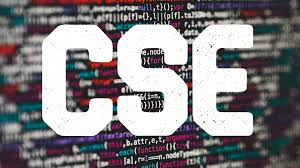

The Department of Computer Science and Engineering started in 2001 at NMIT with an intake of 60 students. Now, with 360 students, the B.Tech program in Computer Science and Engineering course excels in producing young engineers with innovative real-time problem-solving skills combined with professional ethics that suit the IT industry. The department promotes the overall development of students by providing quality and technical education that leads to placements in leading organizations. Additionally, PhD program in Computer Science and Engineering is offered under VTU and the University of Mysore (UoM).
PO1: Engineering knowledge: Apply the knowledge of mathematics, science, engineering fundamentals, and an engineering specialization to the solution of complex engineering problems.
PO2: Problem analysis: Identify, formulate, review research literature, and analyze complex engineering problems reaching substantiated conclusions using first principles of mathematics, natural sciences, and engineering sciences.
PO3: Ethics: Apply ethical principles and commit to professional ethics and responsibilities and norms of the engineering practice.
P04: Individual and team work: Function effectively as an individual, and as a member or leader in diverse teams, and in multidisciplinary settings.
